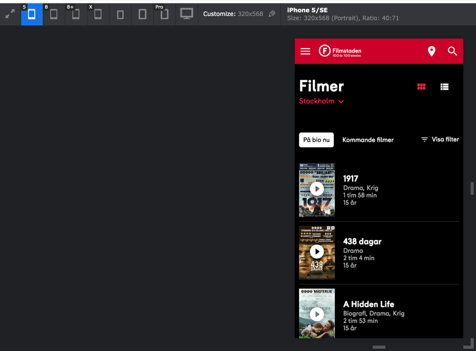
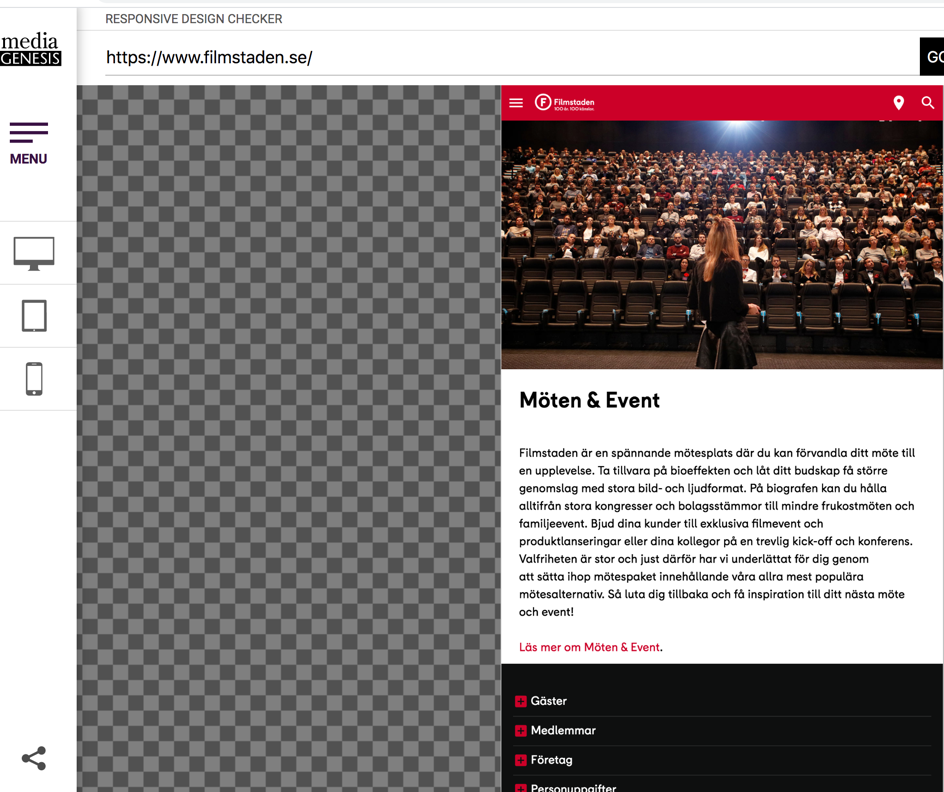
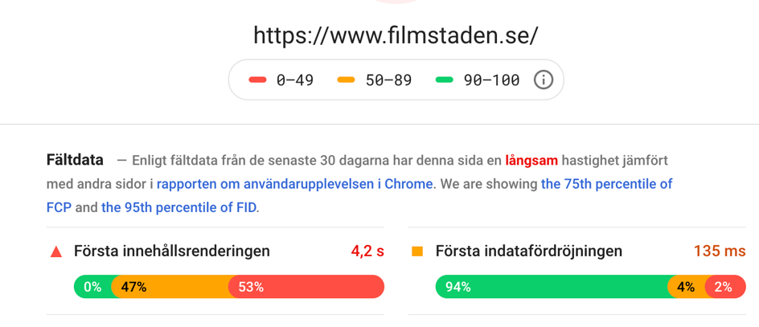
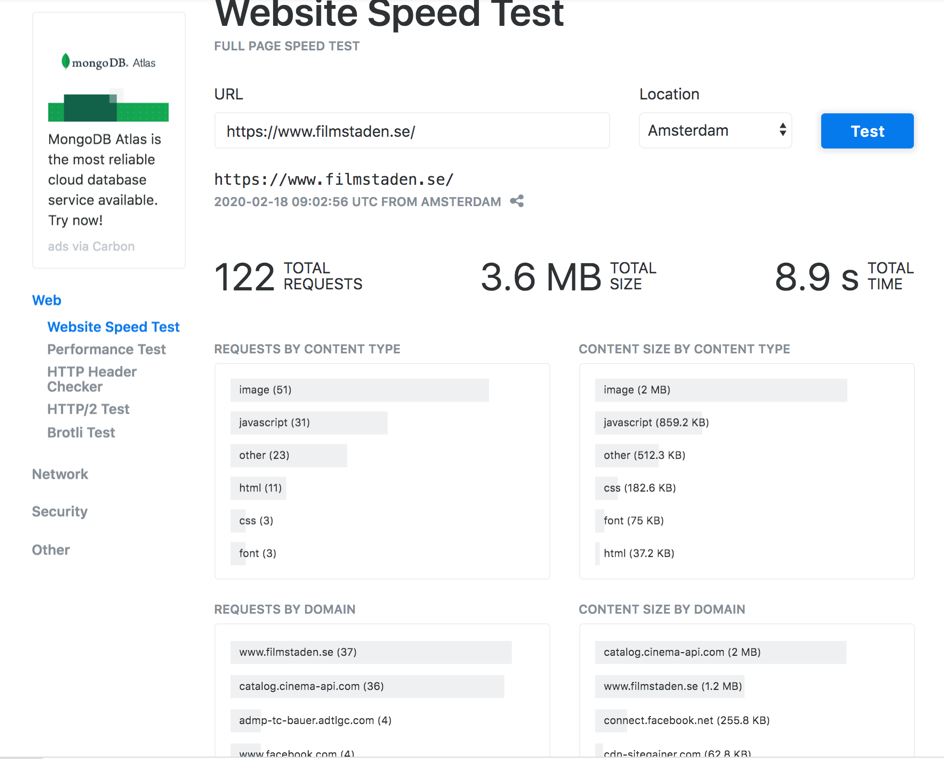

Uppgift 1a - Analysera en webbplats
Johan Lööv, 2020-02-20
Val av webbplats
Analys
Responsiv test
Kommentarer & reflektioner
Referenser
Val av webbplats
Jag valde att ta en titt på Filmstadens webbplats,
En plats jag besökt många gånger för att köpa biobiljetter.
Analys
Här följer analys, vid användning av webbplatsen
1. Vilket syfte verkar webbplatsen ha?
Framgår ju väldigt tydligt att webbplatsens syfte är att sälja biobiljetter till de filmer Filmstaden visar.
2. Vilken målgrupp verkar webbplatsen ha?
Människor som vill se en film (framförallt en relativt ny film). Yngre (<75 år) och svensktalande.
Jag drar dessa slutsatser iom att gamla människor kan ha svårt att söka information via webbsidor samt att Webbplatsen saknar
menyval för översättning till andra språk.
3. Hur logisk är navigeringen på webbplatsen?
Det är väl mycket fokus på biljettförsäljning. Det mest centrala borde vara begreppet Film (ej biljetter) tycker jag.
Webbplatsen borde komma ihåg vilken biograf jag brukar vara intresserad av istället för att jag skall behöva välja den varje gång.
Man borde kunna filtrera filmerna efter typ av film (genre).
Navigeringen i stort tycker jag fungerar bra. Finns ej så mycket korsreferenser vilket är en fördel och det går att backa och ångra
val som man har gjort. Det fungerar bra att backa via webbläsarens ”bakåtknapp”.
4. Hur och varför används bilder på webbplatsen?
1. Bilder används i stor omfattning och förstås även rörliga sådana (trailers). Bilderna används för att göra reklam för filmer.
Finns även bilder på glada biobesökare och på vad som går att köpa och ta med in i salongen, t ex popcorn.
Såg att sidan för trailers bryter mot designregel som säger “Starta inte multimediepresentationer automatiskt”
[T Sundström, 2005, Användbarhetsboken, sid 72]. En trailer går ofta igång direkt när man kommer till sidan.
5. Hur är tillgängligheten, hur skulle t.ex. en synskadad uppfatta webbplatsen?
Tycker att man har utnyttjat ytorna bra och lagt viktig information där blicken naturligt faller och att man följer rådet
”placera sidans delar där användarna brukar titta efter dem” [T Sundström, 2005, Användbarhetsboken, sid 67].
Tror inte en synskadad skulle ha problem med att använda sidan. Förstorar man upp via cntrl/+ syns all info om filmerna tydligt.
Möjligen kan det bli svårt med platsbokning, vid själva biljettköpet, ifall det är en stor salong.
Även en blind person skulle kunna använda sidan (ihop med hjälpmedel som läser upp innehållet) iom att det går att navigera utan mus.
6. Är webbplatsen responsiv, alltså fungerar webbplatsen på olika skärmupplösningar/skärmstorlekar?
Ja, den fungerar bra på både dator, Ipad och telefon enligt de tester jag har gjort via dessa redskap
7. Vilka brister i webbplatsen hittar du och vilka lösningar på problemen skulle du föreslå?
-
Den minns inte vilken biograf jag brukar besöka.
-Detta åtgärdas genom att lagra denna information i cookies
-
När man jobbar med mindre skärm eller har zoomat-in täcker menyvalen hela skärmen då man klickar på menyn.
-Detta åtgärdas genom att dynamiskt begränsa bredden på undermenyerna, så de ryms vid in-zoomning.
-
Behövs två knapptryckningar för att välja biograf (1. klicka på biografen, 2. klicka på visa val).
-Detta åtgärdas genom att vid val av biograf stänga dialogen utan att användaren skall behöva klicka ”visa val” först
-
Snabblänkar försvinner då man zoomar-in eller jobbar med liten skärm vilket gör att man måste gå omvägen via menyn istället.
-Detta åtgärdas genom att behålla de viktigaste snabblänkarna vid in-zoomning, typ Filmer & Biljetter
Responsiv test
Som jag redan nämnt gjorde jag några manuella tester med olika skärmstorlekar (Mac, ipad, Iphone 7 etc) och här följer
dessutom resultatet från ett antal testverktyg som jag använt för att testa webbplatsen
Testverktyg
-
Resizer (Google test tool)
Sidorna såg bra ut i alla simuleringar. Så här såg det t ex ut för Iphone 5.

-
Responsive design checker (ett tool på webben, see responsivedesignchecker.com)
Inga problem att avända olika devices via detta test tool. Så här blev resultatet för en Nexus 7 tablet

-
Responsinator (ett tool på webben, see responsinator.com
Även detta test-tool gav fina resultat
Testverktyg för svarshastighet
Jag gjorde även några automatiserade tester för att utvärdera svarshastigheten
-
Page Speed Insights (google dev tool)
Detta verktyg mäter svarshastighet och resultatet via verktyget blev dålig, se nedan

-
Website Speed Test (online tool from keyCDN tools)
Även detta tool indikerar att hastigheten inte är den bästa (gjorde några referenshämtningar mot några andra svenska
sajter och de fick bättre resultat)

Kommentarer & reflektioner
Tycker i stort att webbplatsen fungerar bra och fyller sitt syfte. Man skulle dock kunna göra mer av den. T ex upplysa om
framtida filmer, skriva om filmnyheter och filmfestivaler och publicera filmrelaterade reportage. Man kunde även ha länkar
till andra filmsajter, exempelvis länka till recensioner av de filmer som visas.
Referenser
Listar här upp ett antal sidor på nätet som gett mig input som underlättat analysarbetet
- http://www.anvandbart.se
- https://validator.w3.org/check?uri=referer
- https://jigsaw.w3.org/css-validator/check/referer
- https://chrome.google.com/webstore/detail/viewport-resizer
- https://responsivedesignchecker.com/
- https://www.responsinator.com/
- https://developers.google.com/speed/pagespeed/insights/?hl=sv
- https://gtmetrix.com/
- https://tools.keycdn.com/speed
- https://www.ginifab.com/feeds/pms/color_picker_from_image.php